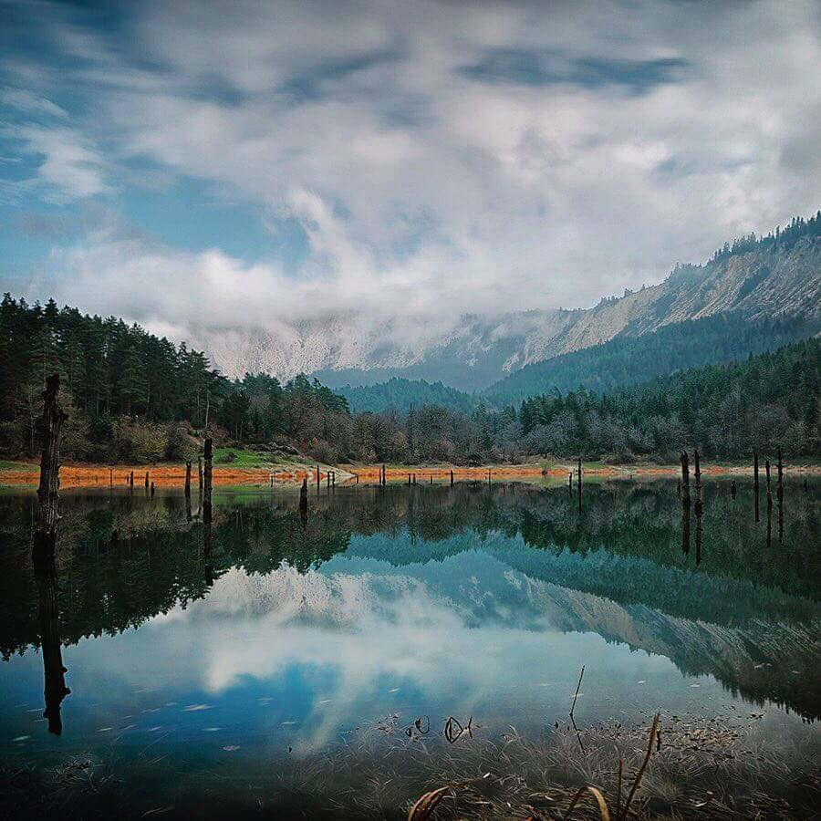

Sülüklü Göl
Sülüklü Göl'de Sessiz ve Huzurlu Bir Kamp
Sülüklü Göl, Bolu'nun Mudurnu ilçesinde yer alan, doğasıyla büyüleyen saklı bir cennet. Göl kenarında kamp yapmak hem şehirden uzaklaşmak hem de doğayla baş başa kalmak için harika bir deneyim sunuyor.
- Telefon çekmeyen alanlarda doğayla baş başa kalma imkanı.
- Yürüyüş parkurları ve fotoğrafçılık için eşsiz manzaralar.
- Göl çevresinde sessiz kamp alanları mevcut.